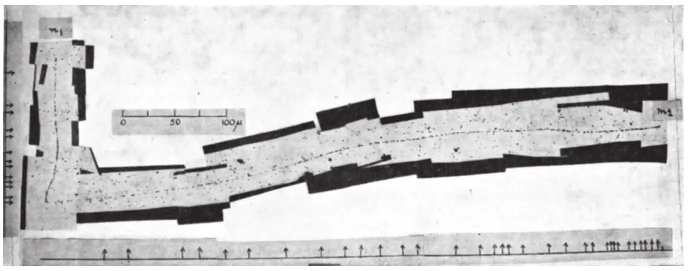
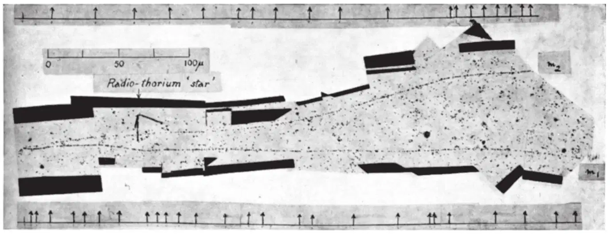
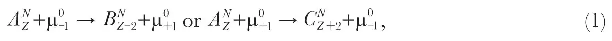
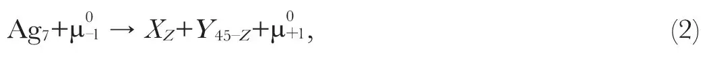
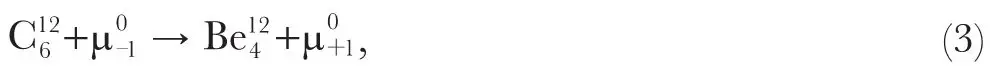
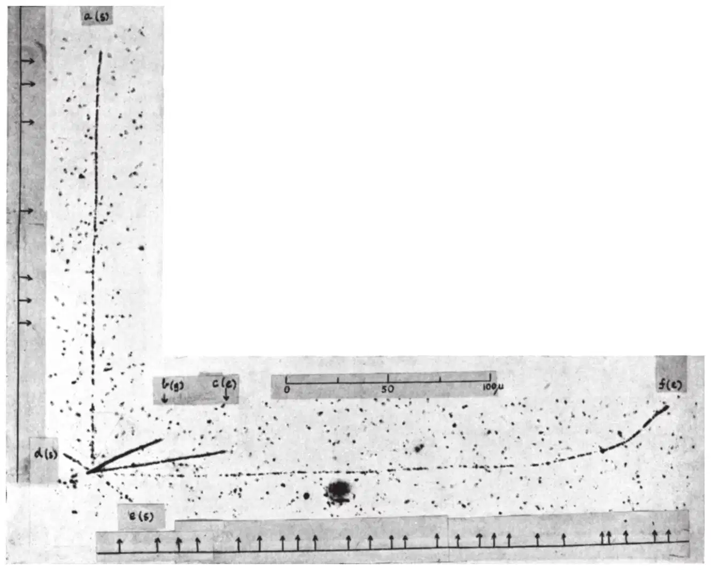
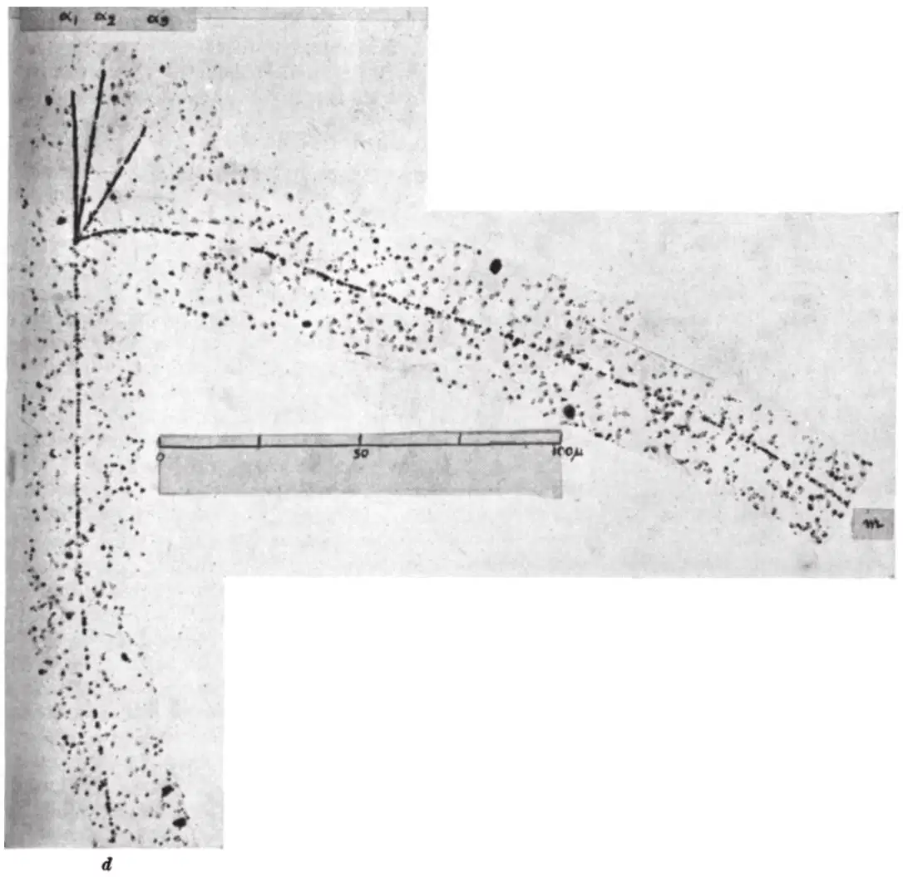
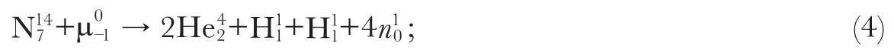

中文
中文C. M. G. Lattes et al.
Editor’s Note
César Lattes and colleagues from the University of Bristol here report recent results from cosmic-ray experiments suggesting the existence of hitherto unknown particles. They had found that some particles having masses small compared to the proton could cause nuclear disintegrations involving the emission of several heavy particles. They referred to the particles as mesons, this being the accepted term for any particle of mass intermediate to the electron and proton. Lattes and colleagues detected the particles from their unusual tracks on photographic plates, showing occasional decays of these mesons into secondary mesons. The primary mesons were later identified as the positive and negative charged pi mesons (pions), which would be created in the laboratory in a few years. 中文
IN recent investigations with the photographic method1,2, it has been shown that slow charged particles of small mass, present as a component of the cosmic radiation at high altitudes, can enter nuclei and produce disintegrations with the emission of heavy particles. It is convenient to apply the term “meson” to any particle with a mass intermediate between that of a proton and an electron. In continuing our experiments we have found evidence of mesons which, at the end of their range, produce secondary mesons. We have also observed transmutations in which slow mesons are ejected from disintegrating nuclei. Several features of these processes remain to be elucidated, but we present the following account of the experiments because the results appear to bear closely on the important problem of developing a satisfactory meson theory of nuclear forces. 中文
In identifying the tracks of mesons we employ the method of grain-counting. The method allows us, in principle3, to determine the mass of a particle which comes to the end of its range in the emulsion, provided that we are correct in assuming that its charge is of magnitude |e|. We define the “grain-density” in a track as the number of grains per unit length of the trajectory. Knowing the range-energy curve for the emulsion4, we can make observations on the tracks of fast protons to determine a calibration curve showing the relation between the grain-density in a track and the rate of loss of energy of the particle producing it. With this curve, the observed distribution of grains along the track of a meson allows us to deduce the total loss of energy of the particle in the emulsion. The energy taken in conjunction with the observed range of the particle then gives a measure of its mass. 中文
We have found that the above method gives satisfactory results when, in test experiments, it is applied to the determination of the mass of protons by observations on plates developed immediately after exposure. The errors in the observed values, based on grain-counts along individual tracks, are only a little greater than those corresponding to the statistical fluctuations associated with the finite number of grains in a track. As we have previously emphasized, however, serious errors arise when the method is applied to the plates exposed for several weeks to the cosmic rays2. These errors are due mainly to the fading of the latent image in the time elapsing between the passage of the particle and the development of the plate. 中文
We have attempted to allow for fading by determining a calibration curve for each individual plate by grain-counts on the tracks of a number of protons, chosen at random from those originating in “stars”. Such a calibration curve corresponds to an average value of the fading of the tracks in the plate. While we thus obtain improved mean values for the mass of particles of the same type, as shown by test measurements on the tracks of protons other than those used in making the calibration, the individual values are subject to wide variations. In no case, however, have mass determinations by grain-counts of particles, judged to be protons from the frequency of the small-angle scattering, given values exceeding 2,400 me or less than 1,300 me. 中文
In these circumstances it is not possible to place serious reliance on the masses of individual mesons determined by grain-counts; and we employ the method, in the present experiments, only to distinguish the track of a meson from that of a proton. In searching a plate, an experienced observer quickly learns to recognize the track of a meson by inspection, provided that its range in the emulsion exceeds 100 μ. Nevertheless, we regard it as established that a particular track was produced by a meson only if both the grain-density and the frequency of the Coulomb scattering correspond to the values characteristic of a particle of small mass. We have considered the possibility that as a result of a rare combination of circumstances we might, in spite of the above precautions, wrongly attribute the track of a proton to a meson of mass less than 400 me. It is difficult to give a numerical estimate of the probability of making such an error, but we believe it to be very small. 中文
Secondary Mesons
We have now made an analysis of the tracks of sixty-five mesons which come to the end of their range in the emulsion. Of these, forty show no evidence for the production of a secondary particle. The remaining twenty-five lead to the production of secondary particles. Fifteen of them produce disintegrations with the emission of two or more heavy particles, and from each of the remaining ten we observe a single secondary particle. Of these latter events, the secondary particle is in four cases a hydrogen or heavier nucleus; in four other cases the identification is uncertain, and in the last two cases it is a second meson. 中文
Fig. 1 is a reproduction of a mosaic of photomicrographs which shows that a particle, m1, has come to the end of its range in the emulsion. The frequent points of scattering and the rapid change of grain-density towards the end of the range show that the track was produced by a meson. It will be seen from the figure that the track of a second particle, m2, starts from the point where the first one ends, and that the second track also has all the characteristics of that of a particle of small mass. A similar event is shown in Fig. 2. In each case the chance that the observation corresponds to a chance juxtaposition of two tracks from unrelated events is less than 1 in 109. 中文

Fig. 1. Observation by Mrs. I. Roberts. Photomicrograph with Cooke × 45 “fluorite” objective. Ilford “Nuclear Research”, boron-loaded C2 emulsion. m1 is the primary and m2 the secondary meson. The arrows, in this and the following photographs, indicate points where changes in direction greater than 2°occur, as observed under the microscope. All the photographs are completely unretouched 中文

Fig. 2. Observation by Miss M. Kurz. Cooke × 45 “fluorite” objective. Ilford “Nuclear Research” emulsion, type C2, boron-loaded. The secondary meson, m2, leaves the emulsion 中文
Grain-counts indicate that the masses of the primary particles in Figs. 1 and 2 are 350±80 and 330±50 me, respectively; and of the secondary particle in Fig. 1, 330±50 me, the limits of error corresponding only to the standard deviations associated with the finite numbers of grains in the different tracks. All these values are deduced from calibration curves corresponding to an average value of the fading in the plate, and they will be too high if the track was produced late in the exposure, and too low if early. We may assume, however, that the two-component tracks in each event were produced in quick succession and were therefore subject to the same degree of fading. In these circumstances the measurements indicate that if there is a difference in mass between a primary and a secondary meson, it is unlikely that it is of magnitude greater than 100 me. The evidence provided by Fig. 2 is not so complete because the secondary particle passes out of the emulsion, but the variation in the grain density in the track indicates that it was then near the end of its range. We conclude that the secondary mesons were ejected with nearly equal energy. 中文
We have attempted to interpret these two events in terms of an interaction of the primary meson with a nucleus in the emulsion which leads to the ejection of a second meson of the same mass as the first. Any reaction of the type represented by the equations

in which A represents any stable nucleus known to be present in the emulsion, involves an absorption of energy, in contradiction with the fact that the secondary meson is observed to have an energy of about 2 MeV. 中文
A second process, represented by the equation

in which X and Y represent two nuclei of approximately equal charge number, may be energetically possible, but the chance of it occurring in conditions where the total energy of the two recoiling nuclei is of the order of only a few million electron-volts is remote. It is therefore possible that our photographs indicate the existence of mesons of different mass5,6,7. The evidence provided by grain counts is not inconsistent with such an assumption. We have no direct evidence of the signs of the charges carried by the two mesons, except that the one secondary meson which comes to the end of its range in the emulsion does not lead to a disintegration with the emission of heavy particles. If, however, we assume that the transmutation corresponds to the interaction of the primary meson with a light nucleus, of a type represented by the equation

the difference in mass of the two mesons must be of the order of 60 me, according to estimates of the mass of the beryllium nucleus. 中文
The only meson theory, to our knowledge, which assumes the existence of mesons of different mass is that of Schwinger8. It is visualized9 that a negative vector meson should have a very short life and should lead to the production of a pseudo-scalar meson of the same charge but lower mass, together with a quantum of radiation. It will therefore be of great interest to determine whether the secondary meson, in transmutations of the type we have observed, is always emitted with the same energy. If this is so, we must assume that we are dealing with a more fundamental type of process than one involving particular nuclei such as is represented in equation (3). If, as an example of such a process, we assume that the momentum of the secondary meson appearing in our experiments is equal and opposite to that of an emitted photon, the total release of energy in the transmutation is of the order of 25 MeV. 中文
In recent communications10,11 very radical conclusions have been drawn from the results of observations on the delayed coincidences produced by positive and negative mesons in interactions with light and heavy nuclei12,13. It is assumed that a negative meson, at the end of its range, falls into a K orbit around a nucleus. In the case of a heavy nucleus, it is then captured, giving rise to a disintegration with the emission of heavy particles. With a light nucleus, on the other hand, it is regarded as suffering β-decay before being captured, so that, like a positive meson, it can produce a delayed coincidence. The conclusion is drawn that the nuclear forces are smaller by several orders of magnitude than has been assumed hitherto. Since our observations indicate a new mode of decay of mesons, it is possible that they may contribute to the solution of these difficulties. 中文
Emission of Mesons from Nuclei
Fig. 3 shows a mosaic of photomicrographs of a disintegration in which six tracks can be distinguished radiating from a common centre. The letters at the edge of the mosaic indicate whether a particular track passes out of the surface of the emulsion, s, into the glass, g, or ends in the emulsion, e. The grain-density in tracks a and c indicate that the time between the occurrence of the disintegration and the development of the plate was sufficiently short to avoid serious fading of the latent image. 中文

Fig. 3. Observation by Mrs. I. Roberts. Photomicrograph with Cooke × 45 “fluorite” objective. Ilford “Nuclear Research”, boron-loaded C2 emulsion. The track (b) dips steeply and its apparent grain density is greater than the true value through foreshortening. Both (b) and (c) were probably produced by α-particles 中文
The track marked f suffers frequent changes in direction due to scattering, and there is a very rapid change in the grain-density in moving along the trajectory. These two features, taken together, make it certain that the track was produced by a light particle, and grain counts give an estimate for the mass of 375±70 me 14. 中文
We have now observed a total of 1,600 disintegration “stars”, in each of which three or more charged particles are ejected from a nucleus. Of these, 170 correspond to the liberation of an amount of energy equal to, or greater than, that in the “star” represented in Fig. 4, but only in two cases can we identify an emitted particle as a meson. We cannot conclude, however, that the emission of mesons in such disintegrations is so rare as these figures suggest. If a meson is emitted with an energy greater than 5 MeV., it is likely to escape detection in the conditions of our experiments. Mr. D. H. Perkins, of the Imperial College of Science and Technology, has shown that, in the B1 emulsion, the grain-density in the track of a meson becomes very small at energies greater than 2 MeV., and we must anticipate a similar result in the C2 emulsion at higher energies. Our observations are therefore not inconsistent with the view that the ejection of mesons is a common feature of the disintegration of nuclei by primary particles of great energy, and that the present instance, in which the velocity of ejection has been exceptionally low so that an identification of the particle has been possible, is a rare example. It is possible that the example of meson production recently described15 is due to a similar process, produced by a primary particle of higher energy, in which some of the heavier fragments emitted on the disintegration have escaped detection because of the depth inside the lead plate at which the event occurred. 中文

Fig. 4. Observation by Mrs. I. Roberts. Cooke × 95 achromatic objective. Ilford “Nuclear Research” emulsion, type C2, lithium-loaded 中文
The disintegration shown in Fig. 3 may be the representative of a type, common in the high atmosphere with particles of great energy. In the present instance the energy of the primary particle must have been of at least 200 MeV., and, if its mass was equal to or less than that of a proton, it would not have been recorded by the emulsion. 中文
Disintegrations Produced by Mesons
The observation of the transmutations of nuclei by charged mesons has led to the suggestion of a method for determining the mass of these particles based on observations of the total energy released in the disintegration1,2. In attempting to apply the method, we meet the difficulty of identifying the particular type of nucleus undergoing disintegration and of taking account of any ejected neutrons which will not be recorded by the emulsion. A photograph of such a disintegration which, at first sight, appears to allow us to draw definite conclusions, is shown in Fig. 4. In the photograph, the tracks of four heavy particles can be distinguished, of which the short tracks α1, α2 and α3 end in the emulsion; α1 and α2 were certainly produced by α-particles, and grain-counts show that α3 is due to a proton. The observations are therefore consistent with the equation

or, less probably, to a similar equation involving the emission of a deuteron or a triton in addition to the particles of short range. 中文
Grain-counts on the track of the particle of long range, d, which passes out of the emulsion, indicate that if it was produced by a proton, the initial energy of the particle was about 15 MeV. Alternatively, if the particle was a deuteron, its energy was 30 MeV.; or, if a triton, 45 MeV. In any case, we can determine the minimum energy which must be attributed to the emitted neutrons if momentum is to be conserved in the disintegration. As a result, we find a minimum value for the mass of the primary meson of 240 me. The value determined by grain-counts is also 240±50 me. 中文
In view of the recent results of experiments on delayed coincidences, referred to previously12,13, such results must, for the present, be accepted with great reserve. We must expect the liberation of an amount of energy of magnitude 100 MeV. in any nucleus to lead to the ejection of several particles, some of which may be neutrons. There is therefore no firm basis for assuming that the disintegration represented in Fig. 4 corresponds to the disintegration of a nucleus of nitrogen rather than one of silver or bromine. Indeed, the delayed coincidence experiments suggest that the second assumption is the more probable. When a sufficient number of observations with loaded plates has been accumulated, it may be possible to draw more definite conclusions from observed regularities in the modes of disintegration of particular types of nuclei. 中文
A detailed account of the experiments will be published elsewhere. 中文
(159, 694-697; 1947)
C. M. G. Lattes, H. Muirhead, G. P. S. Occhialini and C. F. Powell: H. H. Wills Physical Laboratory, University of Bristol.
References:
1. Perkins, D. H., Nature, 159, 126 (1947).
2. Occhialini and Powell, Nature, 159, 186 (1947).
3. Bose and Choudhuri, Nature, 148, 259 (1941); 149, 302 (1942).
4. Lattes, Fowler and Cuer, Nature, 159, 301 (1947).
5. Hughes, Phys. Rev., 69, 371 (1946).
6. Leprince-Ringuet and L’Héritier, J. Phys. et Rad., 7, 65 (1946).
7. Bethe, Phys. Rev., 70, 821 (1947).
8. Schwinger, Phys. Rev., 61, 387 (1942).
9. Wentzel, Rev. Mod. Phys., 19, 4 (1947).
10. Fermi, Teller and Weisskopf, Phys. Rev., 71, 314 (1947).
11. Wheeler, Phys. Rev., 71, 320 (1947).
12. Conversi, Pancini and Piccioni, Phys. Rev., 71, 209 (1947).
13. Sigurgeirsson and Yamakawa, Phys. Rev., 71, 319 (1947).
14. Zhdanov, Akad. Nauk. Odtel. Bull. Ser. Phys., 3, 734 (1938); 4, 272 (1939). C.R. (U.S.S.R.), 28, 110 (1940).
15. Rochester, Butler and Runcorn, Nature, 159, 227 (1947).